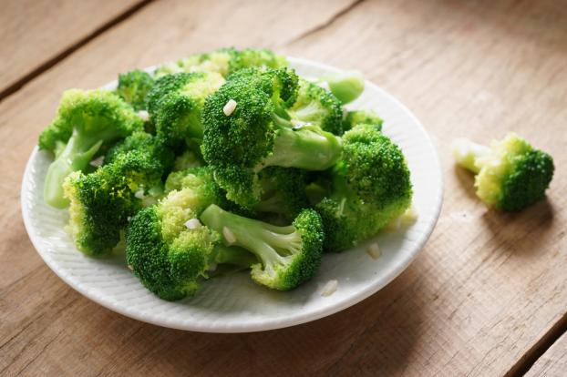

Des listes de listes !
Les 5 aliments prioritaires
- Des ramens
- Des chips 3D
- Des oréos
- Du beurre de cacahuète
- Des brocolis (oui vraiment)

Mes desserts préférés
- Mon no-cheese cake
- Le Sfouf de ma maman (un délicieux gâteau libanais)
- Le cinamon roll
- Le carrot cake avec cette recette
- Le cake rhum-vanille (pourtant je n'aime pas l'alcool!)

Le légume que je déteste le plus AU MONDE c'est les petits pois en boîte. Après, frais j'aime bien.
Et c'est très rigolo, le code ! J'ai hâte de continuer.